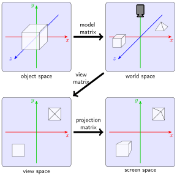
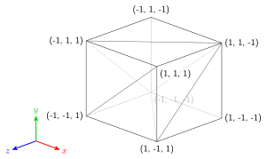
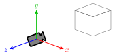
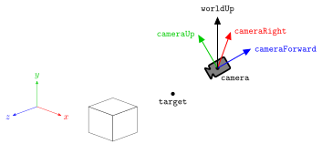
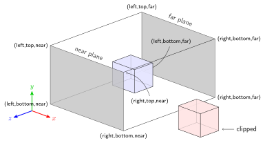
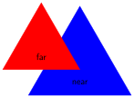

6. 3D Worlds#
6.1. Co-ordinate systems#
{kind=link}

Each object that is to appear in the 3D world is defined in its own local co-ordinate spaces called the object space.
The individual objects are copied and placed in the world space using scaling, rotation and translation operations.
The world space co-ordinates are transformed to view space co-ordinates such that the world space is viewed from the position of a virtual camera.
The 3D view space is projected onto the 2D screen space.
6.2. 3D models#
In this lab we are going to extend the 2D images that we have been dealing with so far and take the exciting leap into the world of 3D. One of the simplest 3D objects is the unit cube which is centred at (0,0,0) and has side lengths of 2 parallel to the co-ordinate axes (Fig. 6.1).
{kind=link}

Fig. 6.1 A unit cube.#
Since each side of a cube is modelled by two triangles then to define this cube in our program we have 36 vertices (6 sides each of 2 triangles with 3 vertices) where the vertices are combinations of -1 and 1.
Download and build the source code contained in Lab05_3D_worlds.zip using the instructions given here. Open up the project and take a look at the main.cpp file and you will see that the vertices and uvCoords arrays have been defined for our unit cube.
// Define vertex positions
static const GLfloat vertices[] = {
-1.0f, -1.0f, 1.0f, // front
1.0f, -1.0f, 1.0f,
1.0f, 1.0f, 1.0f,
-1.0f, -1.0f, 1.0f,
1.0f, 1.0f, 1.0f,
-1.0f, 1.0f, 1.0f,
1.0f, -1.0f, 1.0f, // right
1.0f, -1.0f, -1.0f,
1.0f, 1.0f, -1.0f,
1.0f, -1.0f, 1.0f,
1.0f, 1.0f, -1.0f,
1.0f, 1.0f, 1.0f,
1.0f, -1.0f, -1.0f, // back
-1.0f, -1.0f, -1.0f,
-1.0f, 1.0f, -1.0f,
1.0f, -1.0f, -1.0f,
-1.0f, 1.0f, -1.0f,
1.0f, 1.0f, -1.0f,
-1.0f, -1.0f, -1.0f, // left
-1.0f, -1.0f, 1.0f,
-1.0f, 1.0f, 1.0f,
-1.0f, -1.0f, -1.0f,
-1.0f, 1.0f, 1.0f,
-1.0f, 1.0f, -1.0f,
-1.0f, -1.0f, -1.0f, // base
1.0f, -1.0f, -1.0f,
1.0f, -1.0f, 1.0f,
-1.0f, -1.0f, -1.0f,
1.0f, -1.0f, 1.0f,
-1.0f, -1.0f, 1.0f,
-1.0f, 1.0f, 1.0f, // top
1.0f, 1.0f, 1.0f,
1.0f, 1.0f, -1.0f,
-1.0f, 1.0f, 1.0f,
1.0f, 1.0f, -1.0f,
-1.0f, 1.0f, -1.0f
};
// Define texture co-ordinates
static const GLfloat uvCoords[] = {
// u v
0.0f, 0.0f, // base
1.0f, 0.0f,
1.0f, 1.0f,
0.0f, 0.0f,
1.0f, 1.0f,
0.0f, 1.0f,
: // each of the sides of the cube have the same texture co-ordinates
};
If you compile and run this program you will see that the crate.bmp texture fills the window because our cube vertices are the same as the limits of the NDC.
6.3. The model matrix#
In Lab 5 we saw that we can combine transformations such as translation, scaling and rotation by multiplying the individual transformation matrices together. The model matrix is the matrix that is used to apply transformations to an object.
Lets compute a model matrix for our cube where it is scaled down by a factor of 0.25 in each co-ordinate direction, rotated about a vector pointing vertically up and translated backwards from us by (0, 0, -1.0). In the rendering loop add the following code.
// Calculate the model matrix
float time = glfwGetTime();
glm::vec3 cubeCentre = glm::vec3(0.0f, 0.0, -1.0f);
glm::mat4 translate = glm::translate(glm::mat4(1.0f), cubeCentre);
glm::mat4 scale = glm::scale(glm::mat4(1.0f), glm::vec3(0.25f, 0.25f, 0.25f));
glm::mat4 rotate = glm::rotate(glm::mat4(1.0f), time, glm::vec3(0.0f, 1.0f, 0.0f));
glm::mat4 model = translate * rotate * scale;
Here we calculate the individual transformation matrices and multiply them to give the model matrix. We need to send the model matrix to the vertex shader so that it can apply the transformations.
// Send our model matrix to the vertex shader
GLuint modelID = glGetUniformLocation(shaderID, "model");
glUniformMatrix4fv(modelID, 1, GL_FALSE, &model[0][0]);
Also, we need to make sure we are using the model matrix in the vertex shader. We’ll do that down below after we have looked at the view and projection matrices.
6.4. The view matrix#
OpenGL assumes that the camera is at (0,0,0) and looking down the \(z\)-axis so we need to transform the co-ordinates to this view space (Fig. 6.2).
{kind=link}

Fig. 6.2 The view space.#
To calculate the world space to view space transformation we require three vectors
\(\tt camera\) - the co-ordinates where we are viewing the world space from, i.e., where is the camera
\(\tt target\) - the co-ordinates of the target point where we are pointing the camera
\(\tt worldUp\) - a vector pointing straight up in the world space which allows us to orientate the camera, this is usually always (0,1,0).
The \(\tt camera\) and \(\tt target\) vectors are either determined by the user through keyboard, mouse or controller inputs or through some predetermined routine. To determine the view space transformation we first translate the camera position to (0,0,0) using the following translation matrix
The next step is to align the world space so that the direction vector is pointing down the \(z\) axis. To do this we use vectors \(\tt cameraRight\), \(\tt cameraUp\) and \(\tt cameraForward\) which are unit vectors at right-angles to each other the point in directions relative to the camera (Fig. 6.3).
{kind=link}

Fig. 6.3 The vectors used in the transformation to the view space.#
The \(\tt cameraForward\) vector points directly forward of the camera and is calculated using
The \(\tt cameraRight\) vector points to the right of the camera so is at right-angles to both the \(\tt cameraForward\) and \(\tt worldUp\) vectors. We can use the cross product between the two vectors to calculate this (note that the order of the vectors is important).
The \(\tt up\) vector points in the up direction of the camera and is at right-angles to the \(\tt forward\) and \(\tt right\) vectors we have already calculated. So this can be calculated using (we do not need to normalise this as \(\tt cameraForward\) and \(\tt cameraRight\) are unit vectors)
Once these vectors have been calculated the transformation matrix to align the \(\tt direction\) vector so that it points down the \(z\)-axis is
The translation matrix and alignment matrix are multiplied together to form the view matrix which transforms the world space co-ordinates to the view space.
Lets move the camera to look at our cube from the position (1,1,0) looking towards the center of the cube. Add the following to the main.cpp file.
// Calculate view matrix
glm::vec3 camera = glm::vec3(1.0f, 1.0f, 0.0f);
glm::vec3 target = modelCentre;
glm::vec3 worldUp = glm::vec3(0.0f, 1.0f, 0.0f);
glm::vec3 cameraForward = glm::normalize(camera - target);
glm::vec3 cameraRight = glm::normalize(glm::cross(worldUp, cameraForward));
glm::vec3 cameraUp = glm::cross(cameraForward, cameraRight);
glm::mat4 align = glm::mat4(1.0f);
translate[3][0] = -camera[0], translate[3][1] = -camera[1], translate[3][2] = -camera[2];
align[0][0] = cameraRight[0], align[0][1] = cameraUp[0], align[0][2] = cameraForward[0];
align[1][0] = cameraRight[1], align[1][1] = cameraUp[1], align[1][2] = cameraForward[1];
align[2][0] = cameraRight[2], align[2][1] = cameraUp[2], align[2][2] = cameraForward[2];
glm::mat4 view = align * translate;
// Send the view matrix to the vertex shader
GLuint viewID = glGetUniformLocation(shaderID, "view");
glUniformMatrix4fv(viewID, 1, GL_FALSE, &view[0][0]);
The code above should be pretty self explanatory as we have done similar in the past.
6.5. Projection#
The next step is to project the view space onto the screen space. OpenGL uses Normalized Device Co-ordinates (NDC) to to simplify the final transformation of the screen space to the display where the screen space is a unit cube where axes co-ordinates range from -1 to 1. Any fragments with co-ordinates outside of this range are ignored or clipped.
6.5.1. Orthographic projection#
The simplest type of projection is orthographic projection where the co-ordinates in the view space are transformed to the screen space by simple translation and scaling transformations.
The region of the view space that will form the screen space is defined by a cuboid bounded by a left, right, bottom, top, near and far clipping planes. Any objects outside of the cuboid are clipped and discarded from the rendering (Fig. 6.4).
{kind=link}

Fig. 6.4 Orthographic projection.#
The orthographic projection matrix is calculated using the left, right, bottom, top, near and far co-ordinates such that
If you are interested how this matrix is derived click on the dropdown link below.
Derivation of the orthographic projection matrix
To derive the orthographic projection we first need to translate the co-ordinates so that the centre of the cuboid that represents the clipping volume to (0,0,0). The centre co-ordinates are calculated using the average of the edge co-ordinates, e.g., \(\frac{\textsf{right} + \textsf{left}}{2}\), so the translation matrix is
The second step is to scale the clipping volume so that the co-ordinates are between -1 and 1. This is done by dividing the distance between the edges of the screen space by the distance between the clipping planes, e.g., \(\frac{1 - (-1)}{\textsf{right} - \textsf{left}}=\frac{2}{\textsf{right} - \textsf{left}}\), so the scaling matrix is
Combining the translation and scaling matrices gives the orthographic projection matrix
Let calculate the orthographic projection matrix using left = -1.2, right = 1.2, bottom = -1.2, top = 1.2, near = 0, far = 10 and send it to the vertex shader.
// Calculate orthographic projection matrix
float left, right, near, far, top, bottom;
left = -1.2f, right = 1.2f;
bottom = -1.2f, top = 1.2f;
near = 0.0f, far = 10.0f;
glm::mat4 projection = glm::mat4(1.0f);
projection[0][0] = 2.0f / (right - left);
projection[1][1] = 2.0f / (top - bottom);
projection[2][2] = 2.0f / (near - far);
projection[3][0] = - (right + left) / (right - left);
projection[3][1] = - (top + bottom) / (top - bottom);
projection[3][2] = (near + far) / (near - far);
// Send our projection matrix to the vertex shader
GLuint projectionID = glGetUniformLocation(shaderID, "projection");
glUniformMatrix4fv(projectionID, 1, GL_FALSE, &projection[0][0]);
Of course we also need to update the vertex shader so that is uses the model, view and projection matrices. Edit vertexShader.vert so that it looks like the following.
#version 330 core
// Input vertex data
layout(location = 0) in vec3 position;
layout(location = 1) in vec2 textureCoords;
// Output data
out vec2 uv;
// Values that stay constant for the whole mesh
uniform mat4 model;
uniform mat4 view;
uniform mat4 projection;
void main()
{
// Output vertex position
gl_Position = projection * view * model * vec4(position, 1.0);
// Output (u,v) co-ordinates
uv = vec2(textureCoords);
}
Compile and run the program and you should see the following.
If you are having difficulty getting to this stage take a look at the source code main.cpp and vertex shader vertexShader.vert.
6.5.2. Depth testing#
Our rendering of the cube doesn’t look quite right. What is happening here is that some parts of the sides of the cube that are further away from where we are viewing it (e.g., the bottom side) from have been rendered after the sides that are closer to us (Fig. 6.5).
{kind=link}

Fig. 6.5 Rendering the far triangle after the near triangle.#
To overcome this issue OpenGL uses a depth test when computing the fragment shader. When OpenGL creates a frame buffer it also creates another buffer called a depth buffer where the \(z\) co-ordinate of each pixel in the frame buffer is stored and initialises all the values to -1 (the furthest possible \(z\) co-ordinate in the screen space). When the fragment shader is called it checks whether the fragment has a \(z\) co-ordinate more than that already stored in the depth buffer and if so it updates the colour of the fragment and stores its \(z\) co-ordinate in the depth-buffer as the current nearest fragment (if the fragment has a \(z\) co-ordinate less than what is already in the depth buffer the fragment shader does nothing). This means once the fragment shader has been called for all fragments of all objects, the pixels contain colours of the objects closest to the camera.
To enable depth testing we used the following function before the rendering loop.
// Enable depth test
glEnable(GL_DEPTH_TEST);
We also need to reset the depth buffer at the start of each frame, change glClear(GL_COLOR_BUFFER_BIT); to the following.
glClear(GL_COLOR_BUFFER_BIT | GL_DEPTH_BUFFER_BIT);
Make these changes to your code and you should get a much better result.
6.5.3. Perspective projection#
6.6. The MVP matrix#
The MVP matrix stands for Model-View-Projection and it is a single transformation matrix that combines the model transformations, the world space to view space transformations and the projection in one. Rather than send three separate matrices to the shader and performing matrix multiplication of four matrices (model, view, projection and co-ordinates), it is much more efficient to send just one matrix to the shader and get the shader to perform a single matrix multiplication.
#version 330 core
// Input vertex data
layout(location = 0) in vec3 position;
layout(location = 1) in vec2 textureCoords;
// Output data
out vec2 uv;
// Values that stay constant for the whole mesh
uniform mat4 mvp;
void main()
{
// Output vertex position
gl_Position = mvp * vec4(position, 1.0);
// Output (u,v) co-ordinates
uv = vec2(textureCoords);
}